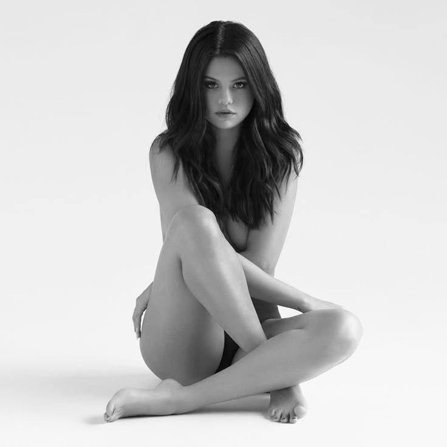

Revival
8.99€
Album Details
Release Date: Revival was released on October 9, 2015.
Main Writers/Producers: The album features contributions from renowned writers and producers such as Julia Michaels, Justin Tranter, and Mattman & Robin, among others.
Significance: Revival represents a turning point in Selena’s career, marking her reinvention as a confident pop artist embracing personal growth, self-empowerment, and maturity.
Tracklist
1. Revival (4:06)
Excerpt 1: "Wake up, it's time to reclaim your spark."
Excerpt 2: "Rise, let a new era ignite your heart."
2. Kill Em with Kindness (3:37)
Excerpt 1: "Disarm the darkness with a gentle smile."
Excerpt 2: "Turn storms to calm with kindness on trial."
3. Hands to Myself (3:21)
Excerpt 1: "Electric touch that I just can’t resist."
Excerpt 2: "Heartbeat racing whenever we coexist."
4. Same Old Love (3:49)
Excerpt 1: "Done with broken hearts and tired goodbyes."
Excerpt 2: "Ready for something that truly satisfies."
5. Sober (3:15)
Excerpt 1: "In clear moments, truth unfolds its wings."
Excerpt 2: "A world of honesty the daylight brings."
6. Good for You (3:41)
Excerpt 1: "Graceful silhouette, glowing with desire."
Excerpt 2: "Softly confident, set every thought on fire."
7. Camouflage (4:09)
Excerpt 1: "Feelings hidden behind an uncertain shield."
Excerpt 2: "Whispers of truth that won't remain sealed."
8. Me & the Rhythm (3:33)
Excerpt 1: "Lose yourself in beats that calm the mind."
Excerpt 2: "Dancing away worries we leave behind."
9. Survivors (3:31)
Excerpt 1: "After the storm, we find a brand new day."
Excerpt 2: "Standing strong, no fear in our way."
10. Body Heat (3:30)
Excerpt 1: "Feel the temperature rising under neon glow."
Excerpt 2: "Sultry steps guide the passion we show."
11. Rise (2:47)
Excerpt 1: "Ascend above the doubt that tries to hold."
Excerpt 2: "Embrace the light that warms your soul untold."